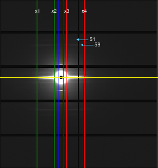

How it works¶
This program requires you to specify a range of axial distances containing a meridional or off-meridian peak that you wish to analyze. You can specify as many of these ranges as you wish. If the number of frames to average is more than 1, all selected images will be average. The program will process the averaged image by going through a series of processes in the order given below.
Meridian¶
Required parameters : all peak ranges and names
1. Find Center¶
4. Calculate Integrated Area¶
To calculate the integrated intensity trace, the program will perform similar algorithm for Equator’s box width calculation, but it will sum the intensity along the meridian instead of the equator, so the box will be vertical box. This histogram will be split into 2 histograms (Top and bottom)
5. Calculate start and end point for convex hull¶
The start point for applying convex hull will be R-min while the end point is 0.7*the minimum distance from center to image bound
6. Obtain the Meridional Intensity Histograms¶
This process is also similar to Equator’s get intensity histogram process, but it will integrate the intensity inside the integrated area which is, int his case, a vertical box (along the meridian)
7. Get Peaks¶
Because the peak ranges are provided by the user, in this process, the program will just find the maximum point in each range
8. Calculate Baselines¶
After the peak locations are identified, the program will calculate the baseline as 50% of the height of each peak. You can change these values or percentage manually through the results table in the GUI.
9. Calculate other information¶
Once the peak locations, and baselines have been idnetified, the information listed below will be calculated for each peak.

- Width : distance of 2 intersection points between peak(black) and baseline(yellow)at half height
- Centroid : the dot product of x (distance from center) and y (projected intensity) in range of the left and right intersections. Then, divide the result by the sum of y (projected intensity) along the range.
- Area : height * width / (2.35 * 0.3989)
Off-Meridional peaks¶
If off-meridional settings are provided, the program will also go through the processes listed below. Required parameters : x1,x2,x3,x4,peak 59 range, and peak 51 range.

10 Get Start and End points for off-meridian Convex hull¶
- Start point : 0.9 * start point of peak 59 range
- End point : 1.1 * end point of peak 51 range
11 Get the Off-Meridian Intensity Histograms¶
There are 4 histograms will be produced from this process, Top-left, Top-right, Bottom-left, and Bottom-right. Left histograms are the vertical integrated intensity between x1 and x2 while the right histograms are vertical integrated intensity between x3 and x4. They are all split to top and bottom by using center y
13 Calculate Baselines for peak 59 and 51¶
Same process as the meridian’s Calculate Baselines
14 Calculate other information for peak 59 and 51¶
Same process as the meridian’s Calculate other information